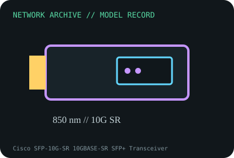

[ MODEL-SPECIFIC NETWORK HARDWARE RECORD ]
Cisco SFP-10G-SR 10GBASE-SR SFP+ Transceiver
850nm short-reach 10GbE SFP+ over duplex multimode fiber. Specifications are tied to this named product; confirm the physical label, revision and source documentation.

IDENTIFICATION: Verify exact PID/model, revision, label and host support. The catalog separates nominal PHY/link specifications from measured throughput; no benchmark is asserted unless explicitly recorded.
Model-specific specifications and compatibility
| Subcategory | SFP transceivers: optical and copper |
|---|---|
| Exact product/model | Cisco SFP-10G-SR 10GBASE-SR SFP+ Transceiver |
| Bus, ports and physical interface | Hot-swappable SFP+ module with duplex LC connector; compatible 10GbE SFP+ host cage. |
| PHY, radio or optical interface | 10GBASE-SR at 850nm over MMF; Cisco specifies 300m on OM3 and 400m on OM4 in its data sheet. Supported reach varies by fiber grade and installed channel. |
| Nominal rate (not measured) | 10Gb/s nominal Ethernet rate; reach values are optical channel specifications, not measured payload throughput. |
| Measured throughput | No test result claimed. A measured record should capture module pair, DOM, fiber type/length, patch panels and traffic/test method. |
| Driver, OS and firmware | No OS driver; check Cisco platform/firmware compatibility for this exact PID. Cisco quality-ID/EEPROM behavior and DOM support are host dependent. |
| Platform/media compatibility | Duplex LC, multimode 850nm. Match 10GBASE-SR at both ends and OM3/OM4 channel reach; do not pair directly with LR single-mode optics. |
| Variant warning | SFP-10G-SR is not SFP-10G-SR-S, SFP-10G-SR-X or a generic coded SR module; support, DOM, temperature and qualification may vary. |
Revision, operation and measurement notes
SFP-10G-SR is not SFP-10G-SR-S, SFP-10G-SR-X or a generic coded SR module; support, DOM, temperature and qualification may vary.
No OS driver; check Cisco platform/firmware compatibility for this exact PID. Cisco quality-ID/EEPROM behavior and DOM support are host dependent.
No test result claimed. A measured record should capture module pair, DOM, fiber type/length, patch panels and traffic/test method.
Archival, ESD and preservation notes
Record exact PID suffix, serial, host port, firmware and DOM. Cap/clean LC ends, never inspect active fiber by eye and store in ESD shielding.
Retain source provenance and the revision/date of each supporting document. Store public records without credentials, personal information or other secrets.
Primary manufacturer and standards sources
- Cisco 10GBASE SFP+ modules data sheetPrimary manufacturer or standards reference; confirm exact part label, revision, and platform qualification.
- Cisco transceiver compatibility matrixPrimary manufacturer or standards reference; confirm exact part label, revision, and platform qualification.
- IEEE 802.3 Ethernet standardsPrimary manufacturer or standards reference; confirm exact part label, revision, and platform qualification.
Manufacturer source links are provided for the stated model or exact product family; use the board label and the official revision-specific compatibility list for final qualification.